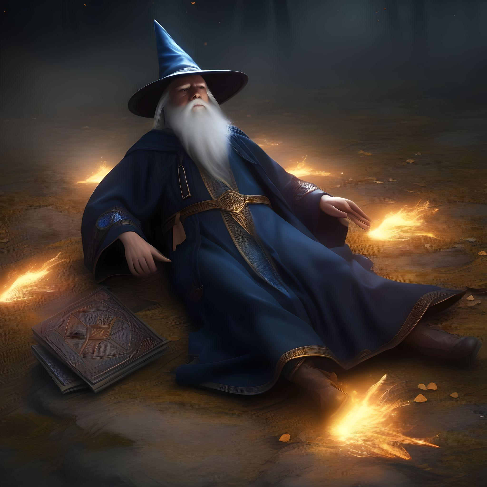

Boris murmurou as palavras do feitiço, e seu corpo começou a desaparecer, ficando invisível aos olhos dos guardas. Ele se moveu silenciosamente pelo salão, passando pelos guardas sem ser notado. Chegando ao final do corredor, ele encontrou uma passagem secreta que o levou diretamente aos aposentos do rei. Boris continua sua missão e agora está cara a cara com o rei.
Boris, esgotado pelo feitiço de invisibilidade, entrou na sala do trono, mas suas forças o abandonaram antes que pudesse explicar a ameaça iminente. Sua voz fraca foi ignorada pelo rei e pelos guardas, que o consideraram apenas um mago delirante. Incapaz de transmitir a urgência da situação, Boris desmaiou, e suas advertências foram desprezadas. Sem suas informações, o reino foi pego de surpresa e caiu diante do inimigo. Boris falhou, e seu sacrifício foi em vão.